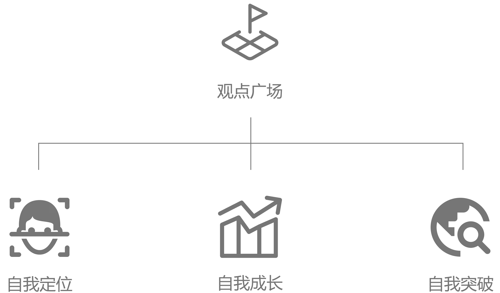
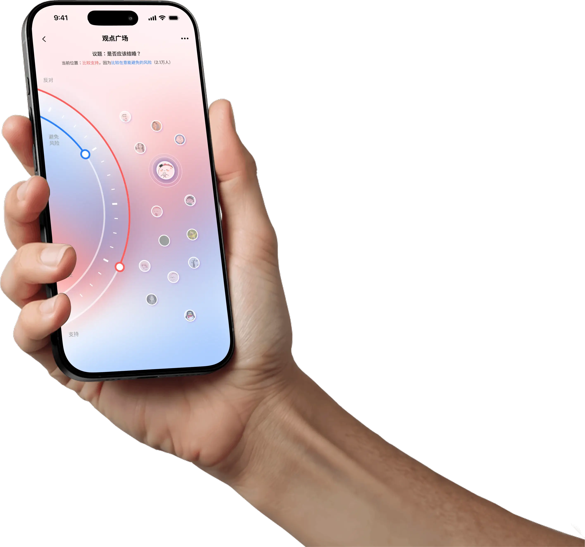
破茧 — 小红书观点探索功能设计
AI 辅助下的观点空间构建与跨立场探索体验设计
将分散的观点内容重组为可探索的观点广场，
引导用户理解自身位置并主动探索不同观点。
从一次观点分歧，到一个设计机会
从作为小红书用户的自身故事到开始了解信息茧房
注意到信息茧房的瞬间：当“所有人都这么想”成为一种错觉
那段时间，我频繁在小红书刷到关于“不要结婚”的讨论。
内容很多，却越来越相似：相似的立场、相似的理由，甚至相似的评论。
久而久之，我开始产生一种错觉：“好像大家都不想结婚。”
直到有一天，我和朋友聊起这个话题。她告诉我：“我并不同意。”
那一刻我意识到：信息茧房的问题，也许并不只是“看不到”，而是“看不进去”。
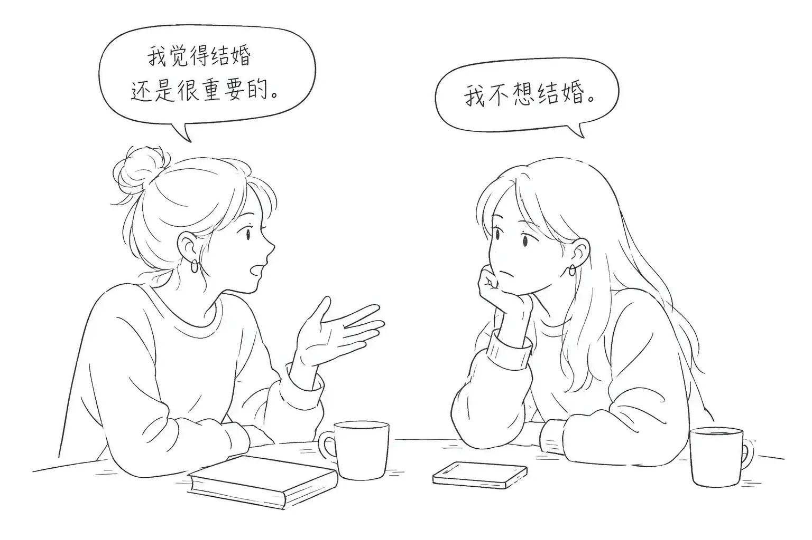
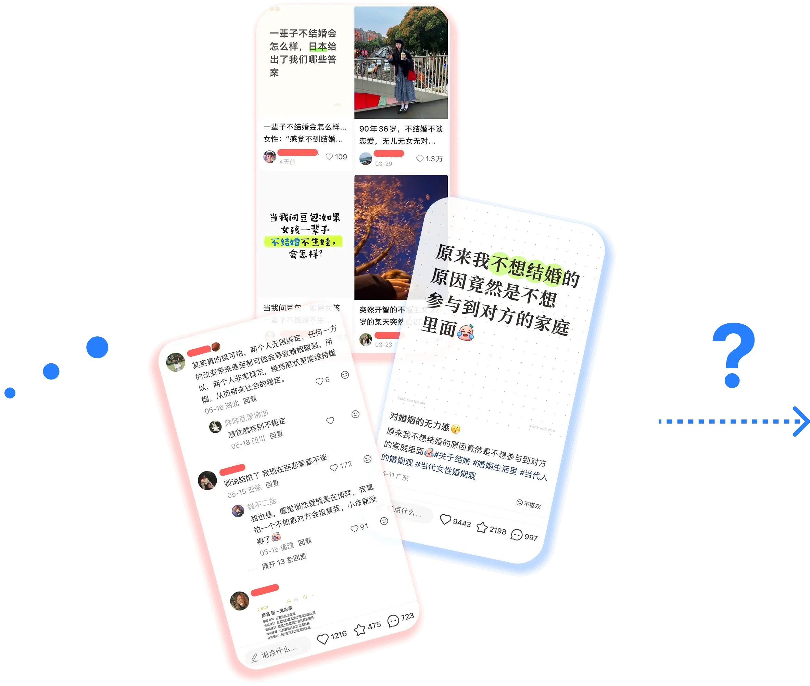
聚焦“观点类”内容：
在观察中，我发现小红书的内容可以主要分为三类：信息类，情绪类和观点类。
其中，“观点类”内容同时具备分歧性、讨论性与立场冲突，也是信息茧房最明显的场景。
因此，本项目聚焦于：“观点类”内容中的观点理解与跨立场探索。
信息类
（攻略 / 经验）
情绪类
（表达 / 共鸣）
观点类
（讨论 / 立场）
小红书不仅是问题发生的地方，也是最适合聚集与强化观点的地方：
这些内容让我开始重新思考：为什么信息茧房会在这个平台上被不断强化？
观点驱动的内容生态
很多内容是在表达立场，而不是提供答案。
评论区放大观点共鸣
用户往往在评论区寻找认同感，而非理解不同观点。
二元议题持续活跃
许多话题天然具有对立立场，更容易形成观点聚集。
也影响“我如何理解不同”。
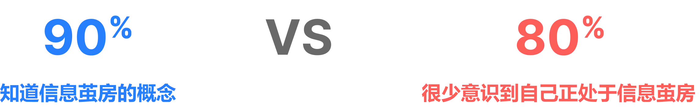
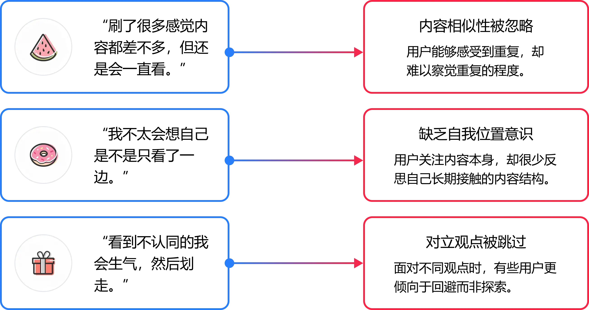
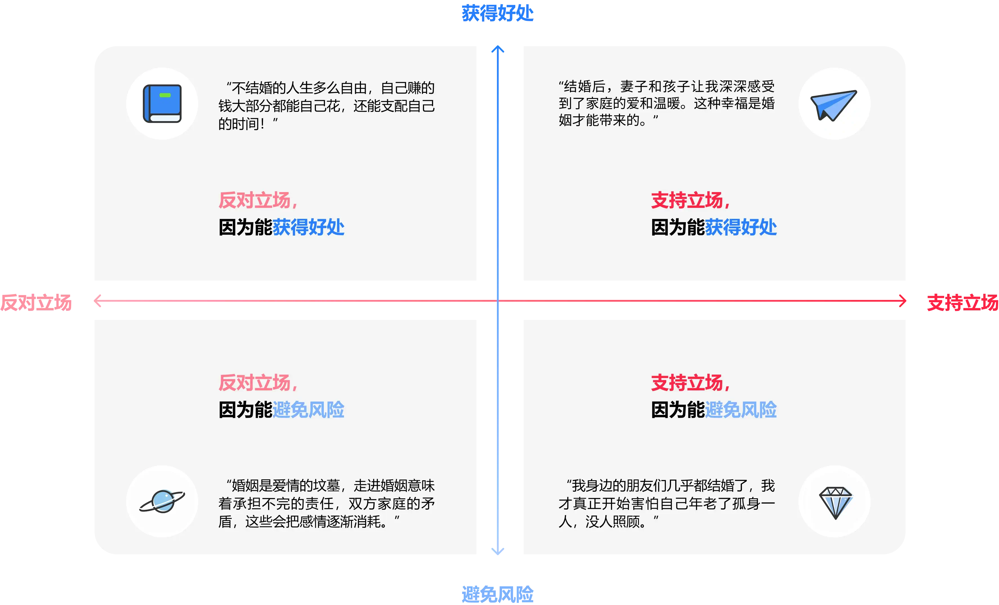
用户调研：这不是我一个人的体验
我与一些高频使用小红书的用户进行了简短访谈与观察
认知与行为的错位
为了了解用户如何看待信息茧房，我对20位小红书高频用户进行了问卷与半结构化访谈。
通过调查，我得出一个有意思的洞察：
用户并非不知道信息茧房的存在，而是难以意识到自己正在经历它。
一个重要发现：观点不仅有立场，还有动机
为了进一步理解用户如何形成观点，我邀请受访者讨论同一个问题：「是否应该结婚？」
我逐渐意识到：人们表达的并不只是立场，还包含驱动这一立场的动机。
于是，我尝试将观点拆解为两个维度： 立场（支持 — 反对）动机（获得收益 — 避免风险）。
当用户谈论自己的浏览习惯
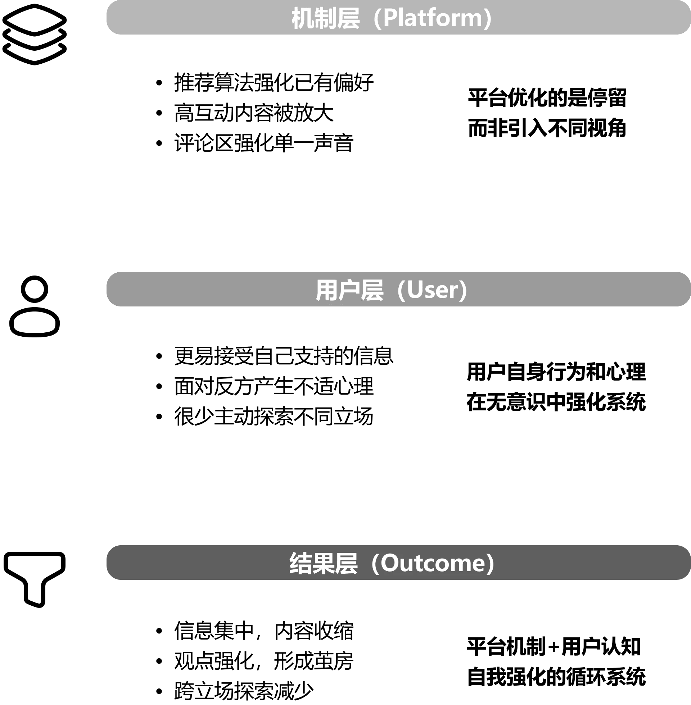
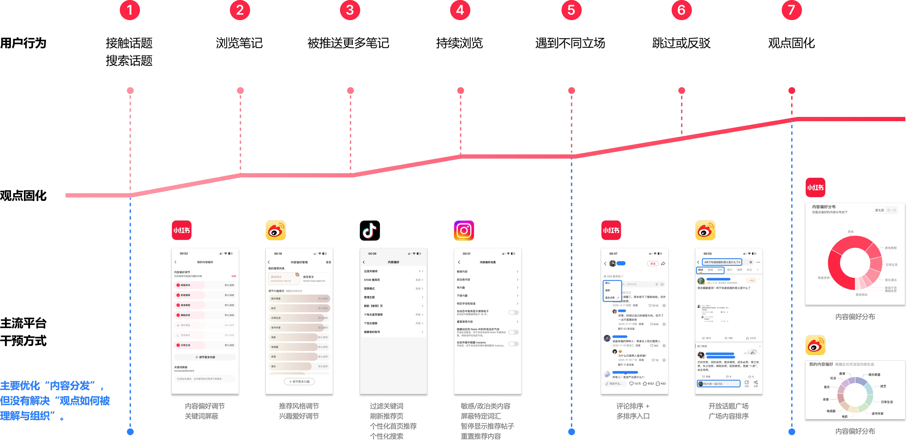
信息茧房是如何一步步形成的？
从平台机制、用户认知到行为路径，寻找设计真正能够介入的位置
为什么会形成信息茧房？
信息茧房并非由算法单独造成，
而是平台机制与用户认知共同作用的结果。
用户旅程：用户是怎么一步步陷入信息茧房的？
为了理解这一过程，我绘制了用户从接触议题到逐渐陷入观点极化的路径。
针对这一现象，现有产品主要干预用户“看到什么”，而很少干预用户”如何理解观点”。
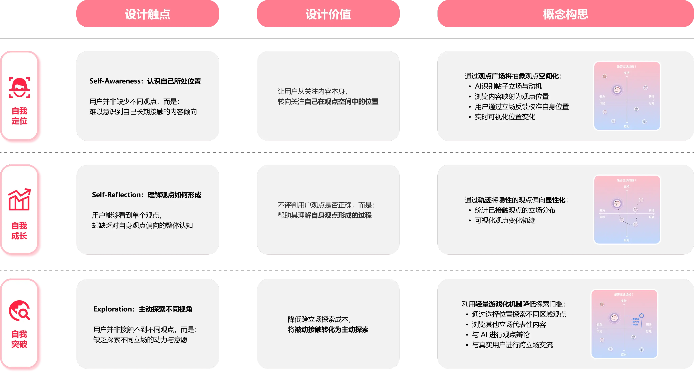
设计触点与策略构思
通过聚合与分析用户已浏览的观点内容，帮助用户看见自己所处的位置，并探索位置之外的世界
改变观点是困难的，
但“好奇”是可以被设计出来的。
用户流程图
从一篇帖子，到一次观点探索
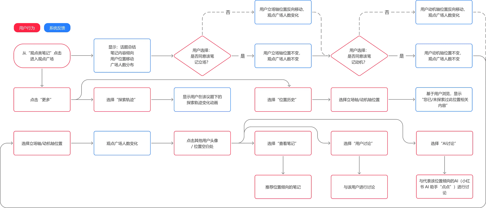
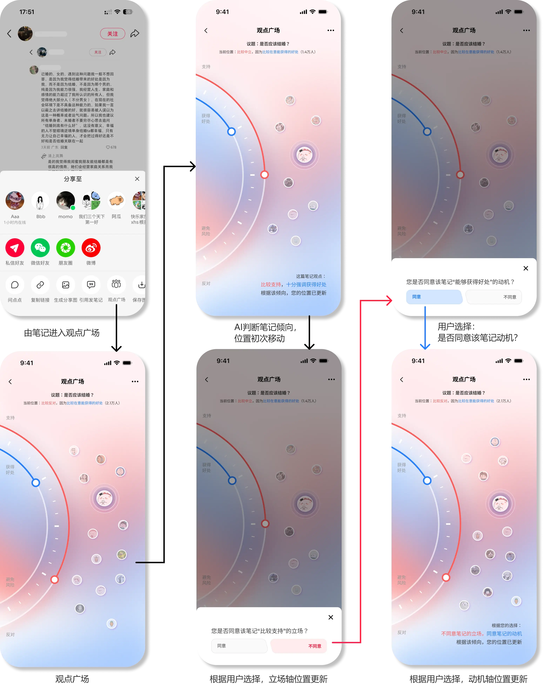
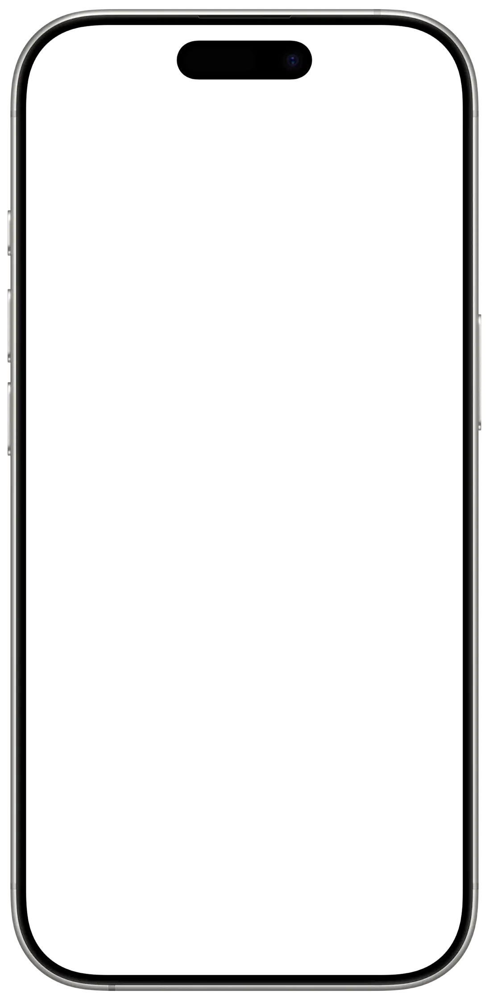
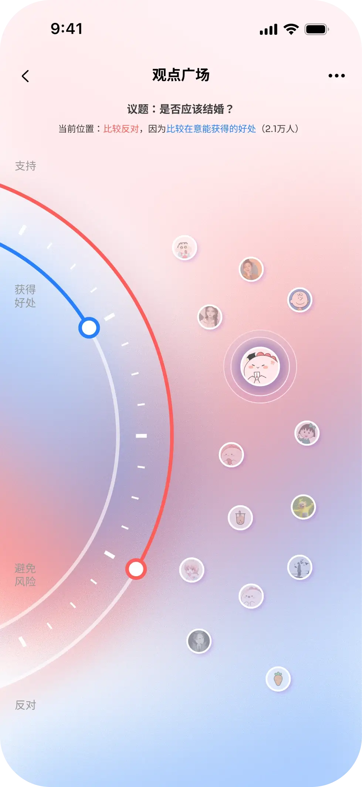
核心界面：高保真设计
从位置校准到跨立场交流，构建完整的探索体验
观点广场设计
将用户已接触的观点内容聚合为可探索的观点空间，并同时呈现个人位置与群体分布，帮助用户理解自己处于哪里，以及不同观点之间的关系。
立场轴（可调节）
支持 / 反对
动机轴（可调节）
获得好处 / 避免风险
当前位置解释
立场，动机，人数
议题
由AI自动分析笔记内容，并生成统一议题
用户定位
通过高亮头像进行展示
群体分布
头像并不对应全部用户，而是抽样展示的代表性用户节点
由笔记进入观点广场
AI判断笔记倾向，
位置初次移动
用户选择：
是否同意该笔记立场？
用户选择：
是否同意该笔记动机？
根据用户选择，
立场轴位置发生移动
根据用户选择，
动机轴位置发生移动
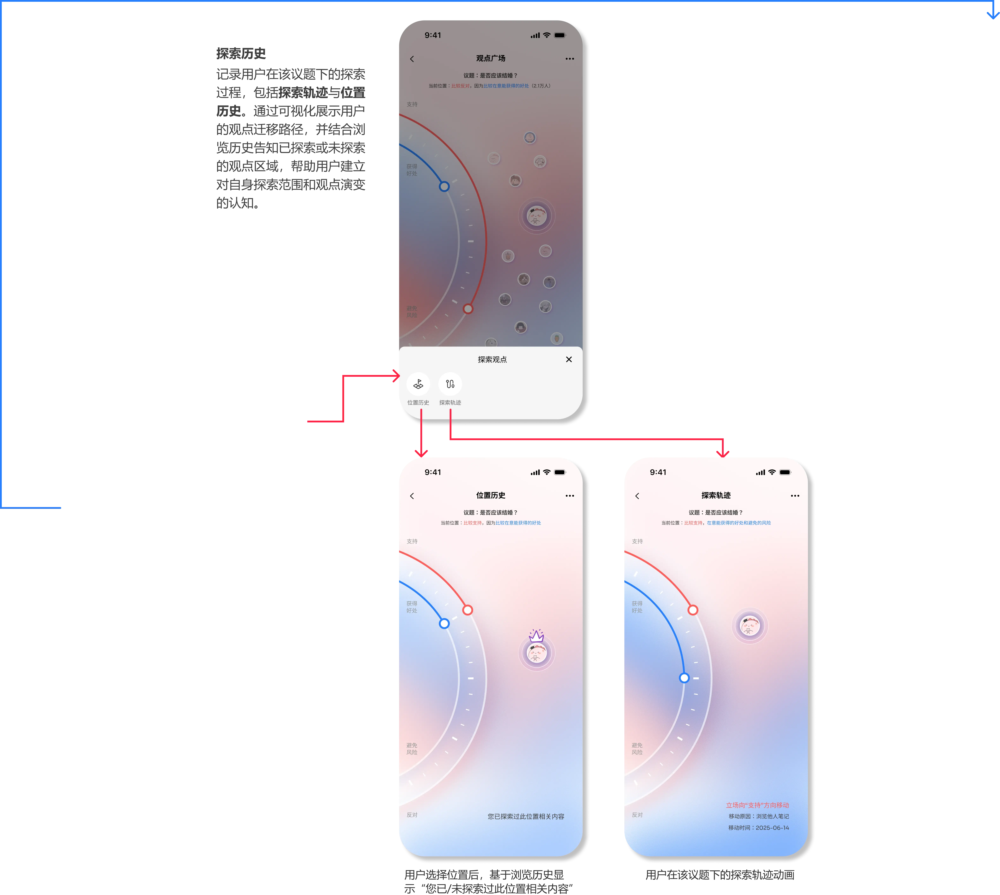
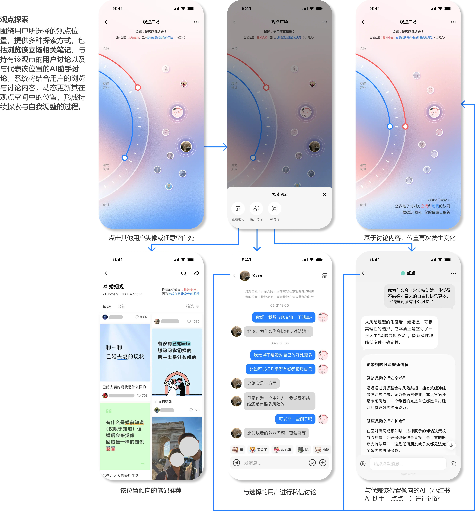
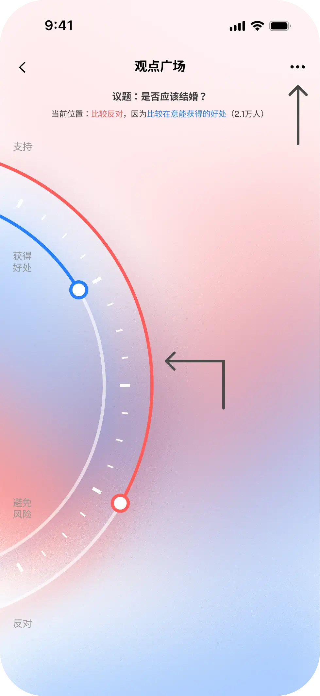
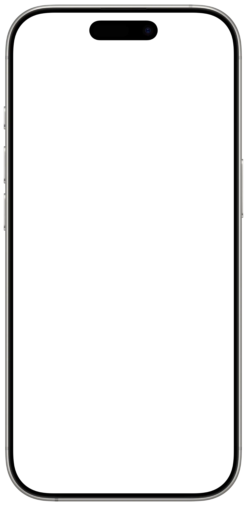
用户在该议题下的探索轨迹动画
用户选择位置后，基于浏览历史显示“您已/未探索过此位置相关内容”
该位置倾向的笔记推荐
与选择的用户进行私信讨论
与代表该位置倾向的AI（小红书AI 助手“点点”）进行讨论
基于讨论内容，位置再次发生变化
点击其他用户头像或任意空白处
探索历史
记录用户在该议题下的探索过程，包括探索轨迹与位置历史。通过可视化展示用户的观点迁移路径，并结合浏览历史告知已探索或未探索的观点区域，帮助用户建立对自身探索范围和观点演变的认知。
观点探索
围绕用户所选择的观点位置，提供多种探索方式，包括浏览该立场相关笔记、与持有该观点的用户讨论以及与代表该位置的AI助手讨论。系统将结合用户的浏览与讨论内容，动态更新其在观点空间中的位置，形成持续探索与自我调整的过程。
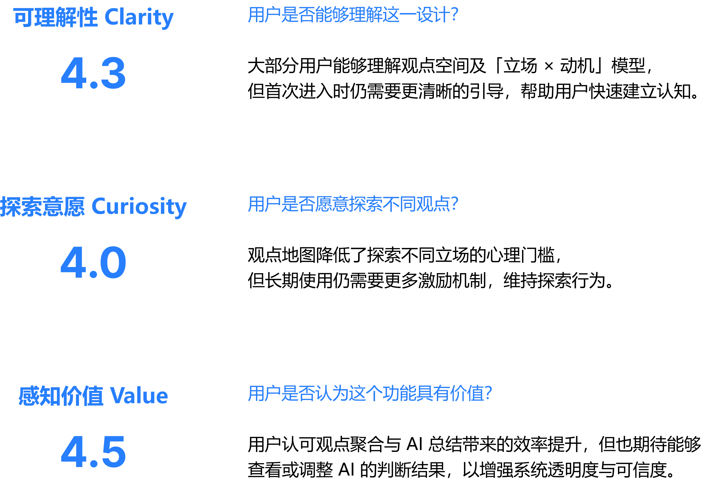
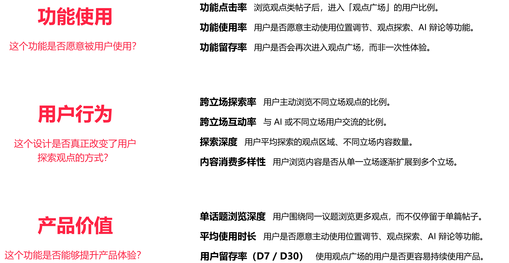
初步验证与未来评估
通过初步用户反馈验证设计方向，并建立未来的产品评估指标
概念验证：我如何初步验证这个设计方向？
由于项目仍处于概念设计阶段，
因此我邀请了5位目标用户体验高保真原型，并进行了5分制打分与半结构化访谈。
我更关注的是：设计是否帮助用户重新理解自己的观点，而不是是否立即改变观点。
商业指标：如果真正上线，我会如何衡量它？
这个项目不是一个独立功能，而是一个影响用户内容消费方式的产品机制。
未来如果产品落地，这个机制有没有真正改变用户的行为，并最终创造平台价值？
我将关注三个层面的指标：功能使用、用户行为以及产品价值。